<!DOCTYPE html>
<html lang="en">
  <head>
    <meta charset="utf-8" />
    <meta name="viewport" content="width=device-width, initial-scale=1.0, maximum-scale=1.0, user-scalable=no" />

    <title>Neuroewolucja</title>
    <link rel="shortcut icon" href="./../favicon.ico" />
    <link rel="stylesheet" href="./../dist/reset.css" />
    <link rel="stylesheet" href="./../dist/reveal.css" />
    <link rel="stylesheet" href="./../dist/theme/beige.css" id="theme" />
    <link rel="stylesheet" href="./../css/highlight/zenburn.css" />

    <link rel="stylesheet" href="./../_assets/custom.css" />

  </head>
  <body>
    <div class="reveal">
      <div class="slides"><section  data-markdown><script type="text/template">

# Neuroewolucja


</script></section><section ><section data-markdown><script type="text/template">
## Algorytmy genetyczne

- heurystyczne metody optymalizacji
- zainspirowane naturalną selekcją
- należą do klasy algorytmów ewolucyjnych
- wykorzystują stochastyczne metody przeszukiwania przestrzeni rozwiązań
- rozważamy jednocześnie całą populację rozwiązań (możliwe zrównoleglenie ewaluacji rozwiązań)

</script></section><section data-markdown><script type="text/template">
## Elementy prostego algorytmu genetycznego
### (simple genetic algorithm, SGA)

- mechanizm kodowania rozwiązania za pomocą ciągu symboli lub ciągłych wartości
- funkcja celu
- operatory genetyczne (krzyżowania i mutacji)
- mechanizm selekcji
</script></section><section data-markdown><script type="text/template">

<div class="cols">
<div>

## Schemat SGA
- *selekcja* - losowy wybór osobników z populacji na podstawie wartości funkcji dopasowania. Lepiej dopasowane osobniki mają większą szansę na przekazanie swoich genów potomstwu
- *reprodukcja* - generowanie potomstwa poprzez procesy rekombinacji (krzyżowania) i mutacji
- *ewaluacja* - wyznaczenie wartości funkcji dopasowania dla nowych osobników
- *zastępowanie* - osobniki ze starej populacji są zastępowane przez nowe pokolenie
</div>
<div>

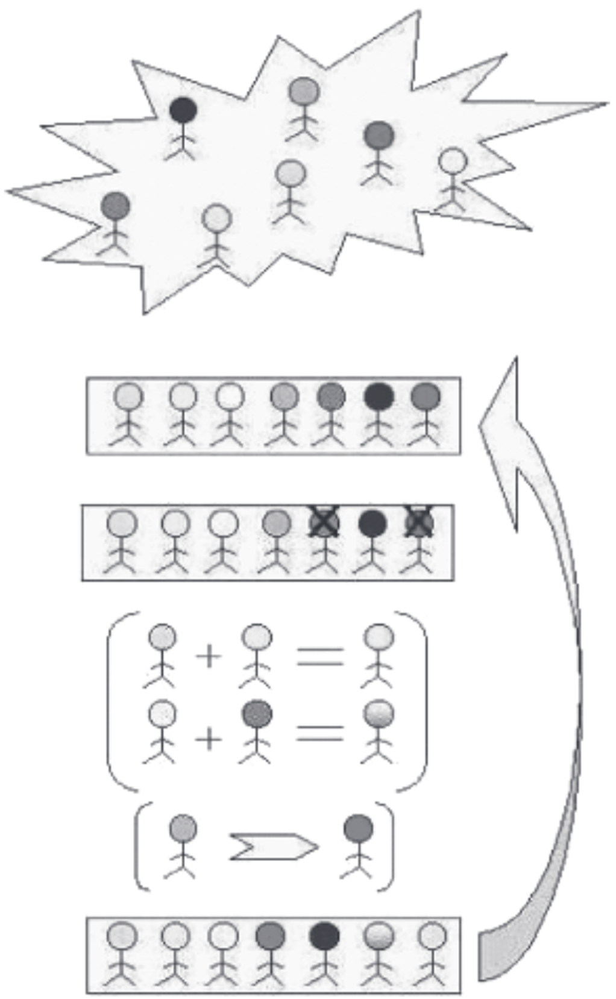
</div>
</div>

</script></section><section data-markdown><script type="text/template">

<div class="cols">
<div>

## Kodowanie rozwiązania

- definiujemy zbiór symboli (alfabet)
- wybrane symbole będą możliwymi wartościami poszczególnych genów
- symbole $1$ i $0$ (kodowanie binarne) mogą mówić o obecności lub braku pewnej cechy, za którą odpowiada wybrany gen, wartość ciągła $[0,1]$ może mówić o natężeniu danej cechy
- informacja o cechach (genotyp) zakodowana jest za pomocą ciągu symboli (chromosom)
- każdemu osobnikowi (fenotypowi) odpowiada genotyp
</div>
<div>


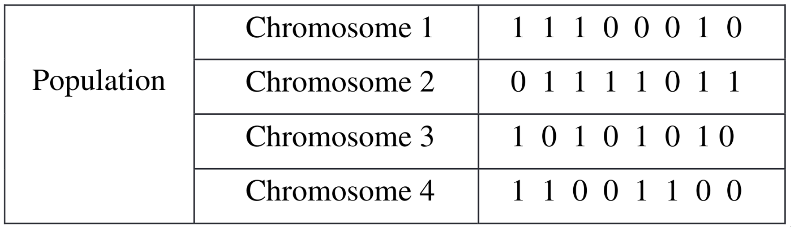

Kodowanie binarne jest uniwersalne.
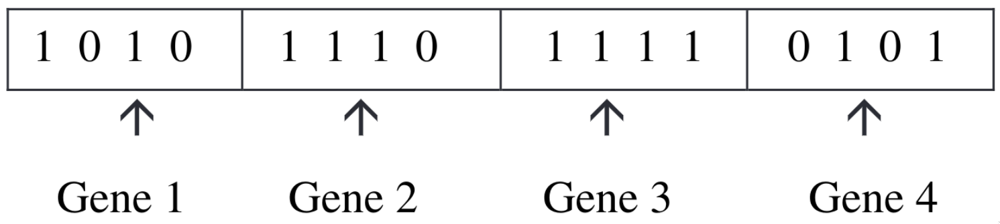

Fenotyp vs. genotyp
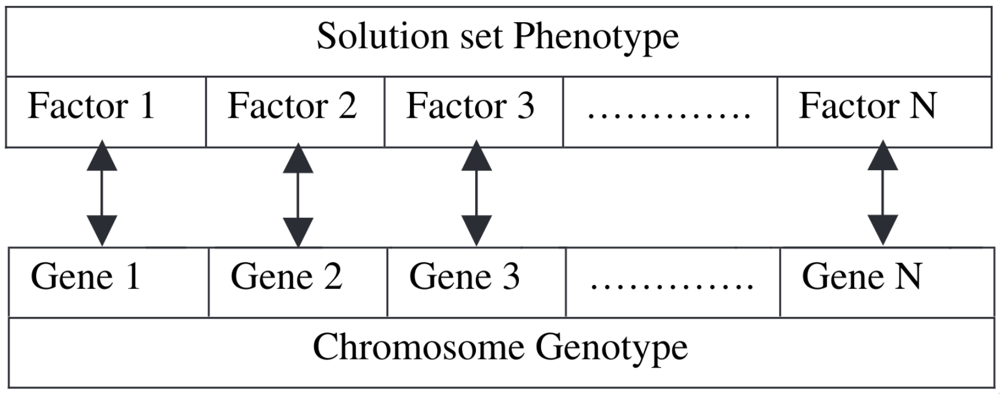
</div>
</div>


</script></section><section data-markdown><script type="text/template">
## Funkcja celu

- ewaluacja (ocena) rozwiązań polega na wyznaczeniu wartości pewnej funkcji
- w procesie optymalizacji poszukujemy maksimum funkcji celu (dopasowania, ang. *fitness*) lub minimum funkcji kosztu (straty, błędu)
- ewaluacji podlega każdy osobnik (fenotyp) w populacji
- przeważnie najbardziej kosztowna część algorytmu, lecz wyznaczanie wartości dopasowania może być przeprowadzone równolegle dla wszystkich osobników
</script></section><section data-markdown><script type="text/template">
## Selekcja

<div class="cols">
<div>

- proces wzorowany na naturalnej selekcji: tylko najlepiej dopasowane osobniki przekażą materiał genetyczny następnemu pokoleniu
- selekcja dokonywana jest na podstawie wartości funkcji celu
- w SGA często stosuje się metodę ruletki: prawdopodobieństwo przekazania genów jest wprost proporcjonalne do wartości dopasowania

</div>
<div>

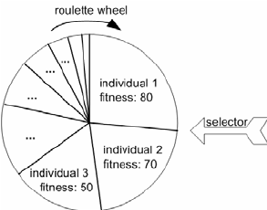

[Źródło rysunku](https://www.researchgate.net/figure/Roulette-wheel-selection-using-fitness-weighted-probability_fig7_237507026)
</div>
</div>
</script></section><section data-markdown><script type="text/template">
<div class="cols">
<div>

## Krzyżowanie

- proces krzyżowania pozwala wygenerować potomstwo (kolejne pokolenie) posiadające geny z puli wybranej w procesie selekcji
- w procesie krzyżowania nie powstają nowe cechy. Do nowej populacji przekazywane są wyłącznie cechy już istniejące w populacji (rekombinacja).
- krzyżowanie może być jedno- lub wielopunktowe


</div>
<div>

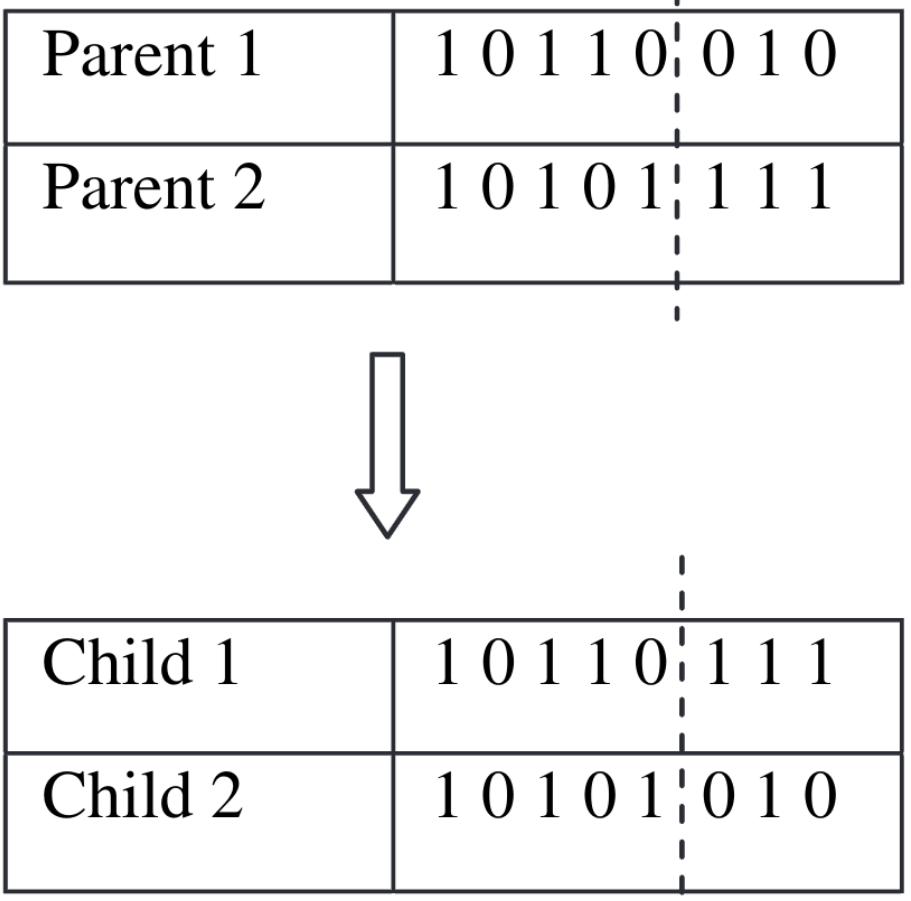

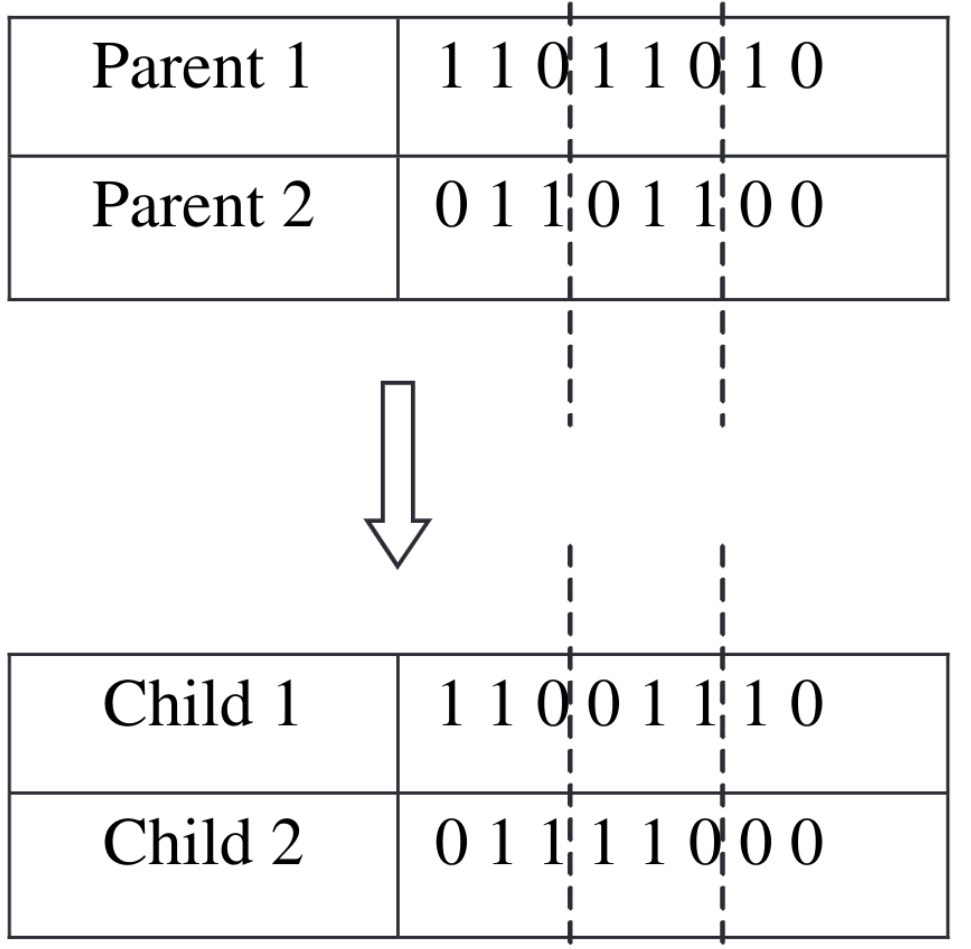
</div>
</div>
</script></section><section data-markdown><script type="text/template">
<div class="cols">
<div>

## Mutacja

- mutacja to losowa perturbacja informacji genetycznej
- mutacja pozwala wprowadzić (przywrócić) cechy nieobecne w aktualnej populacji, wprowadza różnorodność
- pozwala przeszukać większy obszar przestrzeni rozwiązań w celu uniknięcia utknięcia w  lokalnym ekstremum
- mutacja genu binarnego polega na jego odwróceniu, mutacja genu ciągłego może mieć charakter gaussowski


</div>
<div>

*Bit-flipping*

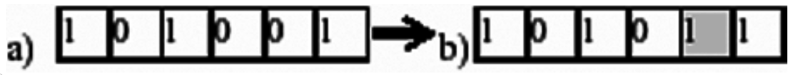


Mutacja gaussowska

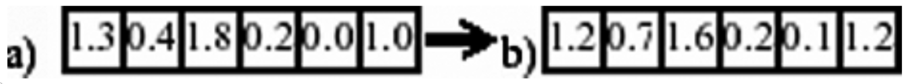

</div>
</div>
</script></section></section><section ><section data-markdown><script type="text/template">
## NeuroEvolution of Augmenting Topologies (NEAT)

### Kenneth O. Stanley, Risto Miikkulainen

Evolutionary Computation 10(2): 99-127 (2002)
</script></section><section data-markdown><script type="text/template">
## Problemy z TWEANN

TWEANN - Topology and Weight Evolving Artificial Neural Networks - algorytmy neuroewolucji powstałe w latach 90. XX w.

- *Competing Conventions Problem* (*Permutations Problem*) - krzyżowanie może dawać potomstwo z wadami genetycznymi
- eliminacja krzyżowania na rzecz mutacji (*nonmating*), np. programowanie genetyczne
- brak chronienia innowacji
- generowanie dużych i nieoptymalnych struktur

</script></section><section data-markdown><script type="text/template">
## *Competing Conventions Problem*

Krzyżowanie genotypów kodujących ten sam fenotyp da w rezultacie wadliwego potomka.

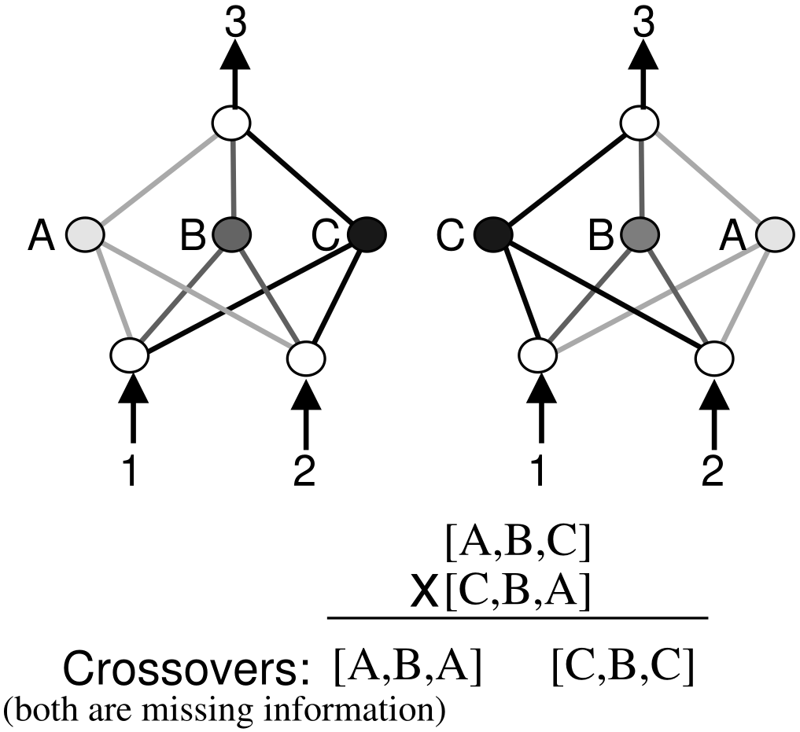
</script></section><section data-markdown><script type="text/template">
## Brak ochrony innowacji

- w tradycyjnych algorytmach TWEANN innowacje nie są chronione
- innowacje są wprowadzane do populacji poprzez mutacje
- pojawienie się mutacji na początku powoduje zmniejszenie dopasowania
- tradycyjna naturalna selekcja premiuje wyłącznie osobniki o dużym dopasowaniu
</script></section><section data-markdown><script type="text/template">
## Założenia NEAT

- śledzenie historii genów
- ochrona innowacji poprzez specjację (powstawanie gatunków)
- minimalizm strukturalny (populacja początkowa bez węzłów ukrytych)
</script></section><section data-markdown><script type="text/template">
## Kodowanie genetyczne sieci neuronowej


<div class="cols">
<div>

- oddzielne geny dla węzłów i połączeń sieci
- 3 rodzaje węzłów sieci: wejścia (sensory), neurony ukryte i neurony wyjściowe
- krawędzie opisywane wagą, flagą opisującą aktywność oraz numerem innowacji
- numer innowacji pozwala odpowiednio ułożyć strukturę sieci do procesu krzyżowania
</div>
<div>

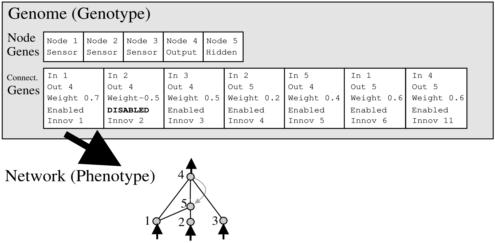
</div>
</div>
</script></section><section data-markdown><script type="text/template">


<div class="cols">
<div>

## Krzyżowanie
- numery innowacji pozwalają na prawidłowe krzyżowanie sieci o różnej topologii
- dziecko dziedziczy wszystkie wspólne geny rodziców, geny rozłączne dziedziczy wyłącznie od lepiej dopasowanego rodzica
- jeśli rodzice mają tę samą wartość dopasowania, geny rozłączne dziedziczone są od obu rodziców (rys.)

</div>
<div>

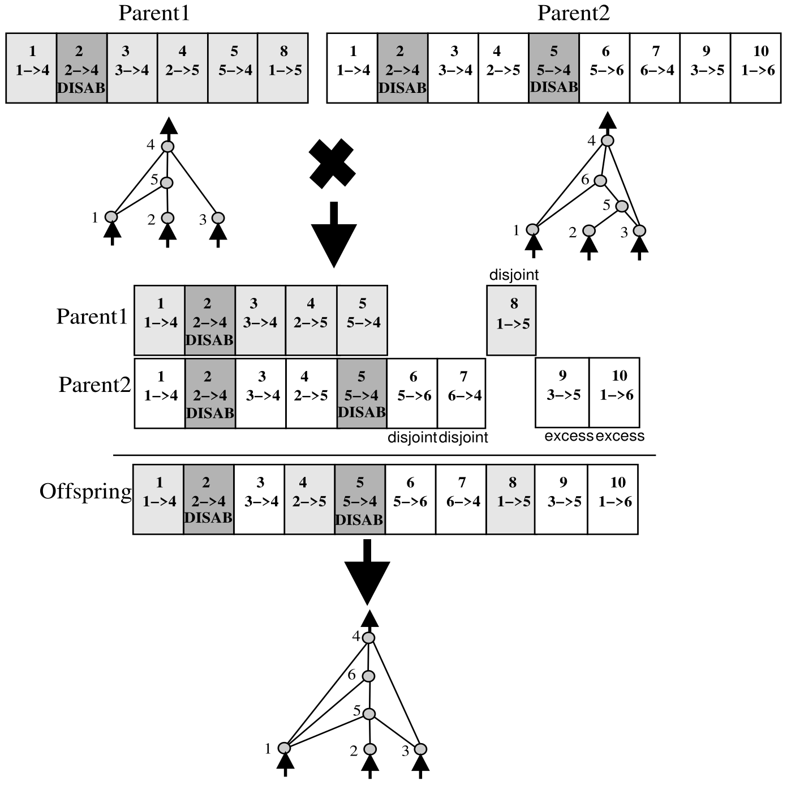
</div>
</div>
</script></section><section data-markdown><script type="text/template">
## Mutacje

<div class="cols">
<div>

- mutacje zmieniają zarówno wagi połączeń, jak i strukturę sieci
- mutacje strukturalne polegają na dodawaniu nowych połączeń lub węzłów ukrytych
- nowe połączenie dodawane jest pomiędzy istniejącymi losowo wybranymi węzłami, otrzymując kolejny numer innowacji
- nowy węzeł dodawany jest poprzez przerwanie (wyłączenie) istniejącego połączenia i dodanie w jego miejsce 2 nowych połączeń, z których jedno ma wagę $1$, a drugie wagę wyłączonego połączenia (brak wpływu na dopasowanie)

</div>
<div>
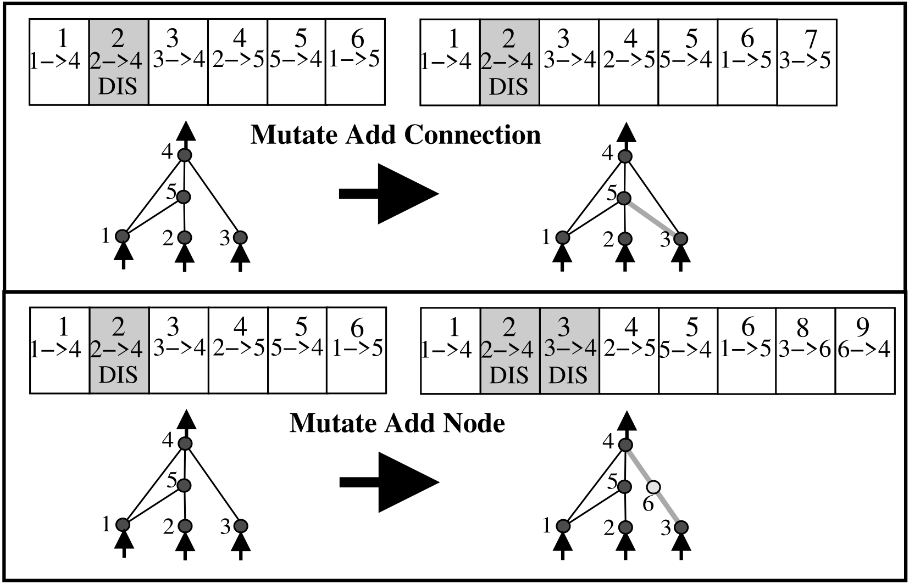
</div>
</div>
</script></section><section data-markdown><script type="text/template">
## Specjacja (podział na gatunki)

Celem podziału na gatunki (nisze) jest ochrona innowacji.

Określamy odległość określającą zgodność $\delta$:

$\delta = \frac{c_1 E}{N} + \frac{c_2 D}{N} + c_3 \cdot W$

- $E$, $D$ - liczba nadmiarowych i rozłącznych genów
- $W$ - średnia różnica wag
- $N$ - liczba genów

Wprowadzamy próg zgodności $\delta_t$ i dokonujemy podziału na gatunki tak, by odległość $\delta$ wszystkich osobników jednego gatunku była mniejsza niż $\delta_t$.

Dla osobników należących do różnych gatunków: $\delta>\delta_t$.

</script></section><section data-markdown><script type="text/template">
## Selekcja

- *explicit fitness sharing* - osobniki z jednego gatunku współdzielą funkcję dopasowania
- ogranicza to dominację jednego gatunku, nawet jeśli osobniki mają wysoką wartość dopasowania
- chroni to nisze ewolucyjne przed wyparciem przez jeden gatunek
- "poprawione" dopasowanie: 

$f_i^\prime = \frac{f_i}{\sum\limits_{j=1}^n sh(\delta(i, j))}$ 

$sh(\delta(i, j))=0$ dla $\delta(i, j)>\delta_t$

$sh(\delta(i, j))=1$ w p.p.

- najsłabsze osobniki z gatunku są eliminowane
- liczba potomstwa przypadająca na gatunek jest proporcjonalna do sumy poprawionych dopasowań
</script></section><section data-markdown><script type="text/template">
## Elementy algorytmu NEAT


</script></section></section><section ><section data-markdown><script type="text/template">
# Przykłady

- [MarI/O](https://www.youtube.com/watch?v=qv6UVOQ0F44)
- [Flappy Bird](https://www.youtube.com/watch?v=ihX3-WDua2I)
- [Creatures](https://www.youtube.com/watch?v=zcv7mX7VyKk)
- [Car](https://www.youtube.com/watch?v=2bW9CdFcaUI)

</script></section><section data-markdown><script type="text/template">

# Źródła

- *Introduction to Genetic Algorithms*, S.N.Sivanandam, S.N.Deepa, Springer 2008
- *Evolving Neural Networks through Augmenting Topologies*, K.O. Stanley, R. Miikkulainen, Evolutionary Computation 10(2): 99-127 (2002)
- [NEAT-Python](https://neat-python.readthedocs.io/en/latest/index.html)

</script></section></section></div>
    </div>

    <script src="./../dist/reveal.js"></script>

    <script src="./../plugin/markdown/markdown.js"></script>
    <script src="./../plugin/highlight/highlight.js"></script>
    <script src="./../plugin/zoom/zoom.js"></script>
    <script src="./../plugin/notes/notes.js"></script>
    <script src="./../plugin/math/math.js"></script>
    <script>
      function extend() {
        var target = {};
        for (var i = 0; i < arguments.length; i++) {
          var source = arguments[i];
          for (var key in source) {
            if (source.hasOwnProperty(key)) {
              target[key] = source[key];
            }
          }
        }
        return target;
      }

      // default options to init reveal.js
      var defaultOptions = {
        controls: true,
        progress: true,
        history: true,
        center: true,
        transition: 'default', // none/fade/slide/convex/concave/zoom
        plugins: [
          RevealMarkdown,
          RevealHighlight,
          RevealZoom,
          RevealNotes,
          RevealMath
        ]
      };

      // options from URL query string
      var queryOptions = Reveal().getQueryHash() || {};

      var options = extend(defaultOptions, {"controls":true,"width":1920,"height":1080,"theme":"beige"}, queryOptions);
    </script>


    <script>
      Reveal.initialize(options);
    </script>
  </body>
</html>
